Om te kan skets en tekeninge maak
is twee baie belangrike vaardighede in tegnologie. Hierdie
vaardighede stel ons in staat om idees, ontwerpe en tegnologiese
oplossings met ander mense te deel. In hierdie hoofstuk gaan jy meer
leer oor die doelwitte van grafika. Jy sal ook leer oor die
verskillende betekenisse van dik en donker lyne, dun en dowwe lyne,
en strepieslyne. Verder sal jy ook leer oor skaal, en hoe om grootte
op jou tekeninge te wys. Die belangrikste ding oor sketse en
tekeninge is egter dat jy moet oefen. Jy sal in hierdie hoofstuk leer
hoe om seker eenvoudige sketse te maak, en hoe om ’n plat tekening
te maak waarop ’n paar groottes aangegee word.
Figuur 1
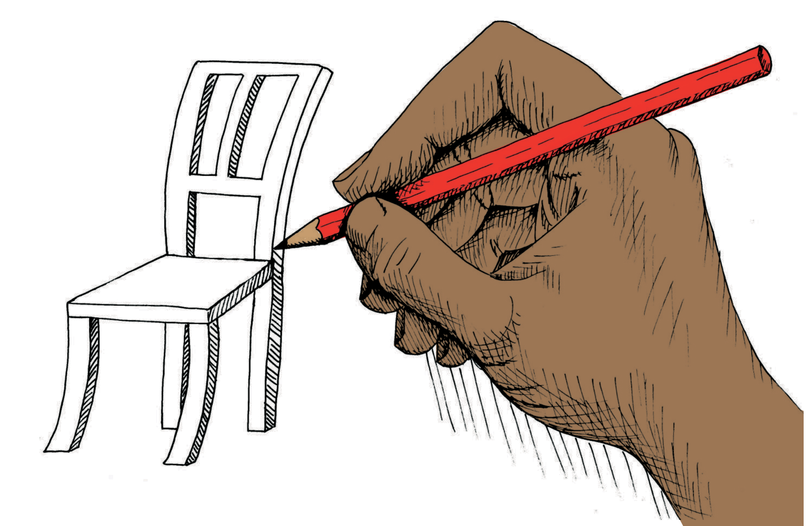
Figuur 2
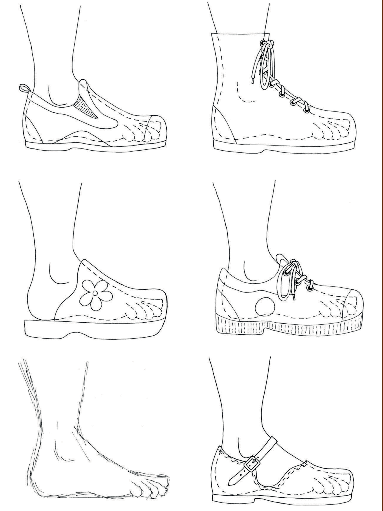
Tekeninge in ’n ateljee vir die ontwerp van skoene
Figuur 3
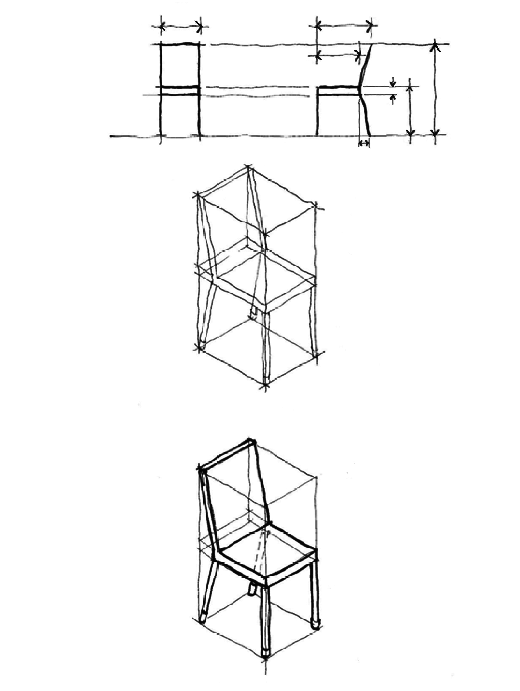
Tekeninge vir die ontwerp van ’n stoel
’n
Nuwe kas vir die klaskamer
Jy het ‘n nuwe kas waarop boeke gebêre kan word vir jou klaskamer nodig.
Wanneer jy hierdie vrae beantwoord is jy besig om ’n ontwerpspesifikasie vir die kas te skryf. Wanneer jy beplan om iets te maak is dit nuttig om eers na te dink oor wat jy wil maak en jou idees neer te skryf. Jy kan dan jou ontwerpspesifikasie aan iemand anders gee om te lees. Daardie persoon mag dalk ’n paar nuttige voorstelle maak wat jou ontwerp sal verbeter. Sonder ’n geskrewe ontwerp-spesifikasie is dit moeilik om goeie voorstelle van ander mense te kry.
Hoeveel deure moet dit hê?
Hoeveel rakke moet dit hê?
Waarvan moet dit gemaak word?
Hoe hoog en hoe breed moet dit wees?
Hoe diep moet dit wees?
Maak ’n rowwe skets in die spasie hieronder om te wys hoe jy dink die kas sal lyk.
Maak ’n groter en beter skets van die kas. Skryf aantekeninge langs jou tekening om te wys waar die deure en rakke is. Skryf ook aantekeninge wat sê hoe groot die verskillende onderdele van die kas moet wees, in millimeters (mm).
Met die regte kas drie keer groter as jou tekening wees?
Hoeveel groter as jou tekening moet die regte kas wees?
Die lengtes van die verskillende onderdele van ’n voorwerp word die afmetings genoem. Dinge soos die hoogte, breedte en diepte van die kas, asook die afstand tussen die rakke, word die afmetings genoem.
’n Werklike voorwerp is dikwels verskeie kere groter as die tekening daarvan. As die voorwerp vyf keer groter as die tekening is, sê ons die skaal van die tekening is “1 tot 5”. Dit word geskryf “1:5”.
Verskillende tipes lyne in tekeninge
In hierdie tekening word ’n strepieslyn gebruik om die voet binne die skoen aan te dui.
Figuur 4
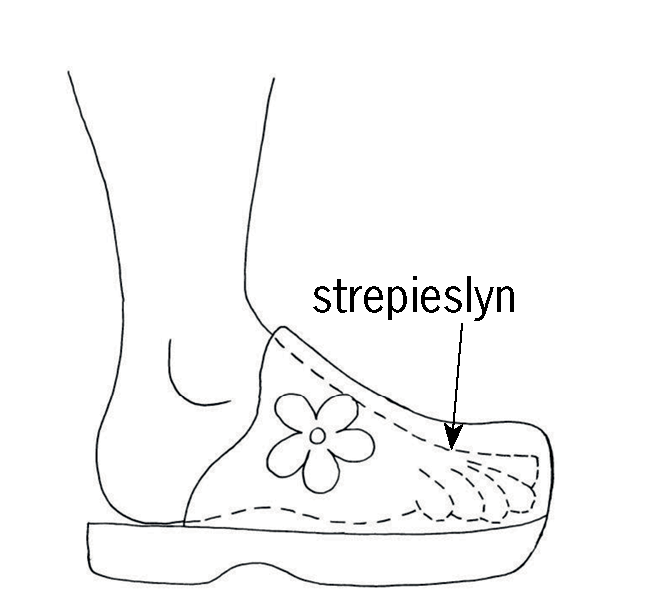
Strepieslyne dui dinge aan wat versteek is, soos die voet wat binne ’n skoen versteek is.
Gebruik strepieslyne om die liggame van die twee mense in die motor hieronder aan te dui.
Figuur 5
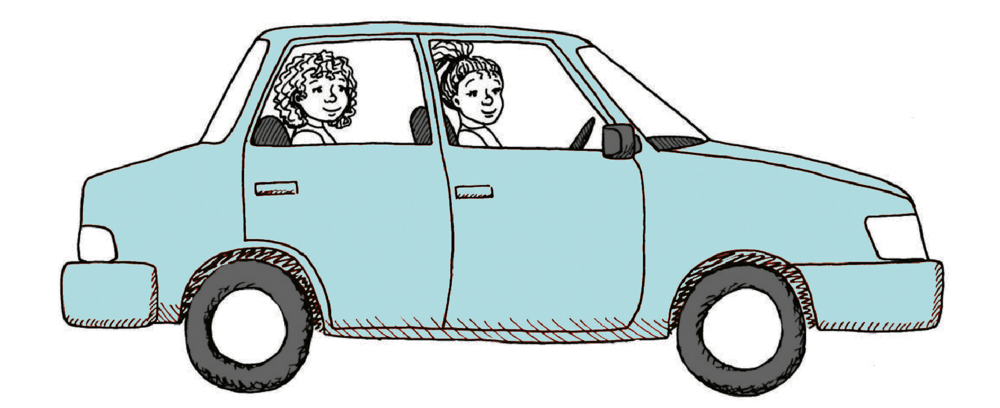
Trek strepieslyne op die tekening van ’n kas op die volgende bladsy om vier rakke binne die kas aan te dui.
Net soos wat jy ’n taal soos Afrikaans nodig het om met ander mense te kommunikeer, is sketse en tekeninge ’n “taal”. En soos Afrikaans het hulle reëls om ons te help om hulle beter te verstaan. Hierdie reëls word tekenwerkkonvensies genoem.Net soos wat jy ’n taal soos Afrikaans nodig het om met ander mense te kommunikeer, is sketse en tekeninge ’n “taal”. En soos Afrikaans het hulle reëls om ons te help om hulle beter te verstaan. Hierdie reëls word tekenwerkkonvensies genoem.
’n Tekening soos hierdie word ’n werkstekening genoem. ’n Werkstekening is ’n akkurate tekening wat werklike afstande aandui.
Soliede lyne word gebruik om die sigbare kante van voorwerpe op tekeninge aan te dui.
As jy iets wil aandui wat agter iets anders versteek is, gebruik jy ’n strepieslyn.
Groottes, wat ook afmetings genoem kan word, word deur ’n dun afmetingslyn met pyle aan beide kante gewys. Hulle word ’n klein entjie weg van voorwerpe geteken.
Kort verlengingslyne, wat nie aan voorwerpe raak nie, wys vir jou wat gemeet word.
Afmetings word gewoonlik in mm aangegee.
Werkstekeninge word gebruik om dinge volgens presiese groottes te ontwerp. Ontwerpers kommunikeer die presiese groottes van elke onderdeel van ’n voorwerp in werkstekeninge, sodat elke onderdeel pas om die finale produk behoorlik te laat werk. Byvoorbeeld, ’n fietspomp kan nie ’n stootstang hê wat nie binne-in sy buitebuis pas nie. Sien figuur 8 hieronder.
Figuur 6
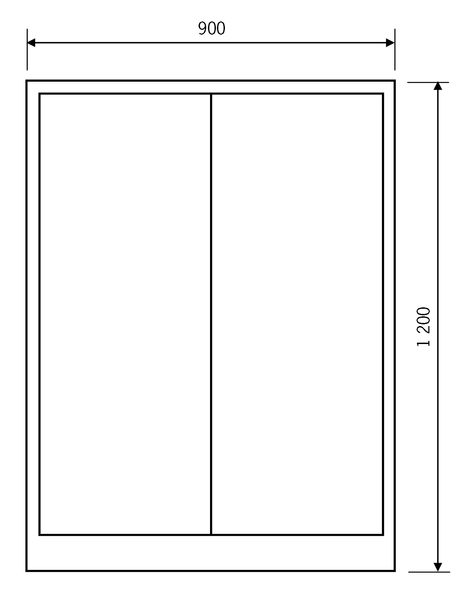
Figuur 7
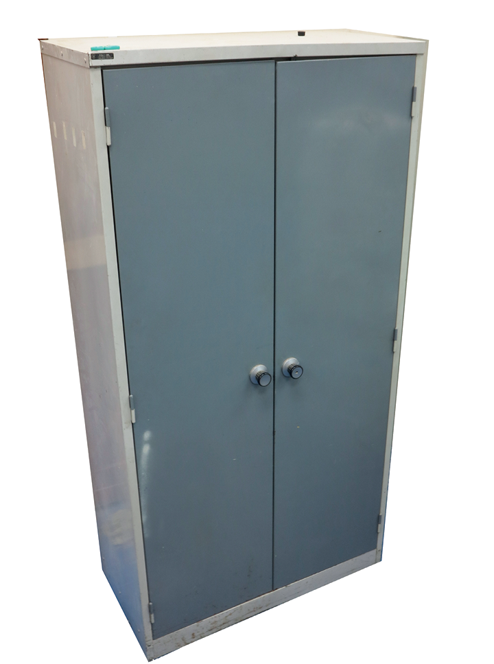
Deur na party van die tekeninge te kyk en te oefen om sketse te maak het jy geleer om:
dun, dowwe lyne as gidslyne te gebruik.
dik lyne te gebruik om die sigbare kante van ’n voorwerp te wys, soos die kante wat jy van voor af kan sien; en
’n soliede lyn te gebruik om hierdie kante aan te dui.
Jy het ook geleer dat afmetings gewys word deur die lengte van ’n voorwerp bo ’n afmetingslyn te skryf.
’n Afmetingslyn het klein pyltjies aan beide eindpunte. Hierdie pyltjies raak aan klein verlengingslyne wat aandui waar die lengte begin en waar dit eindig.
Strepieslyne dui weggesteekte besonderhede op tekeninge aan.
Huiswerk: bestudering van tekening van 'n fietspomp
Figuur 8
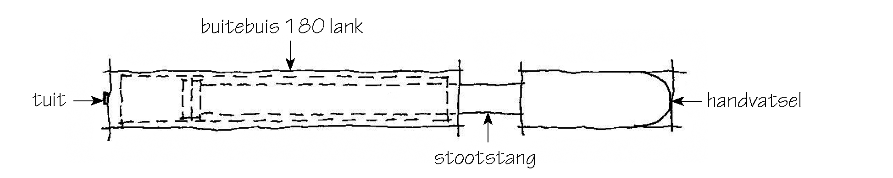
Sketse en tekeninge is belangrike maniere om idees aan te dui en te kommunikeer.Vir ontwerpers en tegnoloë is tekeninge en sketse dieselfde as om aantekeninge te maak. Dit herinner hulle aan hul idees en help hulle om hierdie idees met ander te deel.
Figuur 9
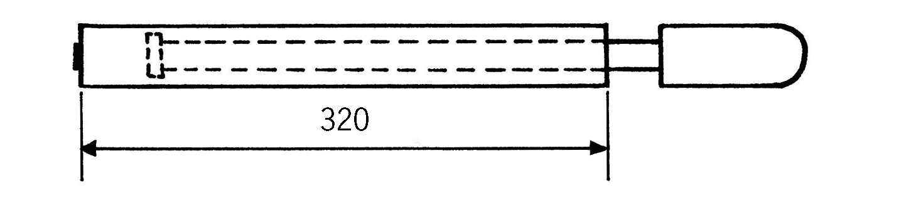
Fietspomp Skaal 1:4
Benoem die onderdele van die pomp wat in hierdie tekening gewys word.
Hoe lank is die buitebuis van hierdie fiets pomp?
Hoe lank is die stootstang? Hoe weet jy dit? Kyk na die tekening van ’n ander fietspomp hieronder. Hierdie tekening is akkuraat, dus noem ons dit ’n skaaltekening. Dit is vier keer kleiner as die regte pomp. Ons sê dit is geteken op ’n skaal van 1:4. Dit beteken dat as jy die lengte van die buitebuis in hierdie tekening meet, dit vier keer kleiner sal wees as die afmetings van die buitebuis van die regte pomp.
Figuur 9
Fietspomp Skaal 1:4
Hoekom word die buitebuis van die pomp met soliede lyne geteken?
Watter ander onderdeel van hierdie pomp word met soliede lyne geteken?
Waarom is ’n gedeelte van die stootstang met strepieslyne geteken en ander dele met soliede lyne?
Watter soort lyn wys hoe lank die buitenste buis is?
Hoe lank sal die buitebuis van die werklike pomp wees?
Gebruik die skaal op die tekening om uit te vind hoe lank die handvatsel van die werklike pomp sal wees.
Trek nou ’n afmetingslyn op die pomptekening om te wys hoe lank die handvatsel sal wees.
Noem drie verskillende tipes lyne wat jy op die tekening kan sien.
Wat is die skaal van die werkstekening van ‘n kas drie bladsy vantevore? Meet afstande op die tekening om uit te vind wat die skaal is.
Vryhandsketse
Figuur 10
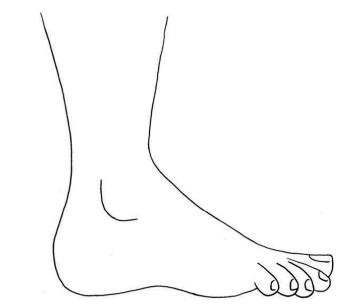
Die kunstenaar wat die voet in figuur 10 geteken het, het eers ligte dun lyntjies geteken, soos aan die regterkant gewys word.
Toe het sy die dowwe lyne as gidslyne gebruik om die voet te teken.
Figuur 11
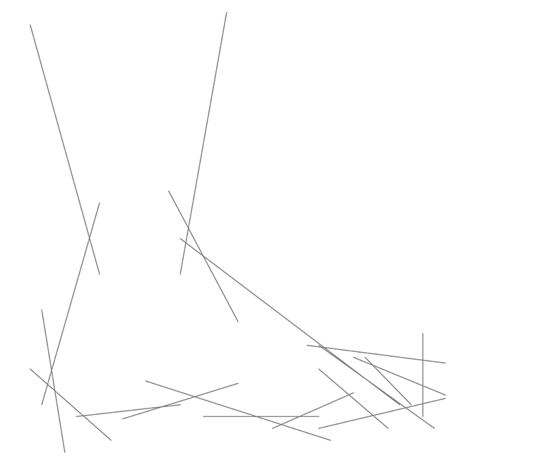
Teken van lyne
Gebruik dun, dowwe lyne vir die gidslyne, wat konstruksielyne genoem word.
Gebruik dik, donker lyne vir die buitelyne van sketse.
Figuur 12
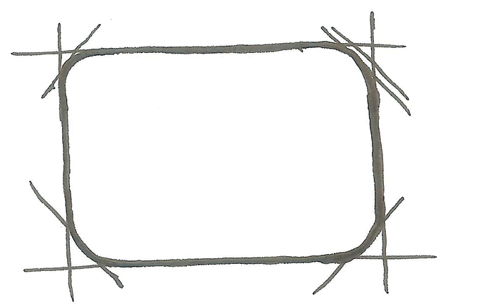
Figuur 13
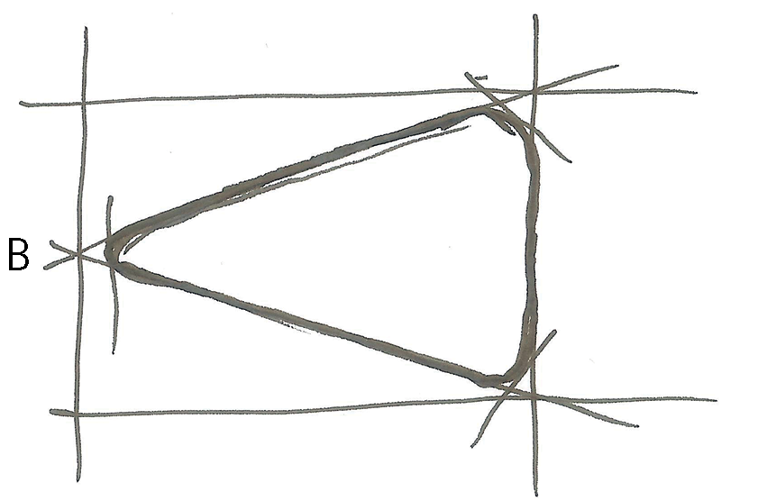
Figuur 14
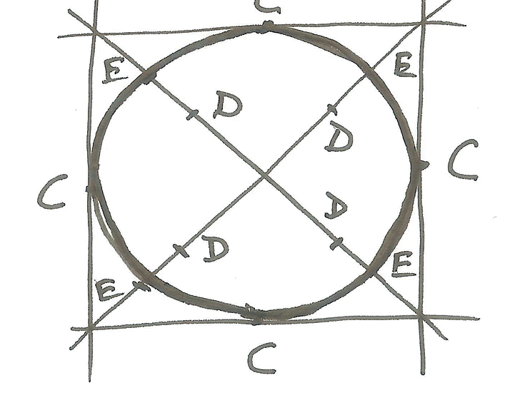
Teken ’n reghoek met geronde hoeke.
Jou tekening moet ongeveer twee keer so groot wees as die tekening hier regs.
Teken ’n gidsraam. Moenie ’n liniaal gebruik nie. Maak gebruik van ligte gidslyne.
Merk die hoeke met dowwe lyne.
Maak die hoeke met ’n ronding.
Maak nou die buitelyn dikker.
Skets ’n driehoek met geronde hoeke.
Jou tekening moet omtrent drie keer groter wees as die tekening regs.
Skets ’n reghoekige gidsraam sonder om ’n liniaal te gebruik.
Merk die middelpunt van een kant by B, en trek lyne na die teenoorgestelde hoeke.
Teken die hoeke met ’n ronding, soos jy vir die reghoek gemaak het.
Maak die buitelyn van die driehoek met geronde hoeke dikker.
Skets ’n sirkel.
Jou tekening moet omtrent vier keer so groot wees as die tekening regs.
Skets ’n vierkantige gidsraam. Moenie ’n liniaal gebruik nie.
Skets lyne van een diagonale hoek na die ander.
Merk die posisies C van die middelpunt op elke sy af.
Merk punte D op die diagonale, halfpad tussen die middelpunt en elke hoek.
Merk punte E halfpad tussen die D’s en die hoeke.
Skets ’n gebuigde lyn om die C’s met die E’s te verbind; C-E-C-E-C-E-C-E.
Jy het ’n sirkel geskets. Maak nou die buitelyn dikker.
Op die volgende bladsy word ’n ware grootte tekening van ’n fiets pomp gewys. Maak ’n akkurate 1:4 skaaltekening van die tekening van die pomp op die geruite papier hieronder. Let op die volgende:
Die geruite papier hieronder het ’n 5 mm-spasiëring tussen die lyne.
Gebruik ’n liniaal en maak seker jy onthou die verskillende tipes lyne.
Die tekening onder aan die bladsy wys die vooraansig van ’n huis. Maak ’n groter tekening van die vooraansig van hierdie huis. Let op die volgende:
Die 6 m lengte van die werklike huis moet op jou tekening 60 cm wees.
Dui die hoogte van die symuur aan deur ’n afmetingslyn op jou tekening te gebruik.
Dui die hoogte tot by die bopunt van die skoorsteen aan.
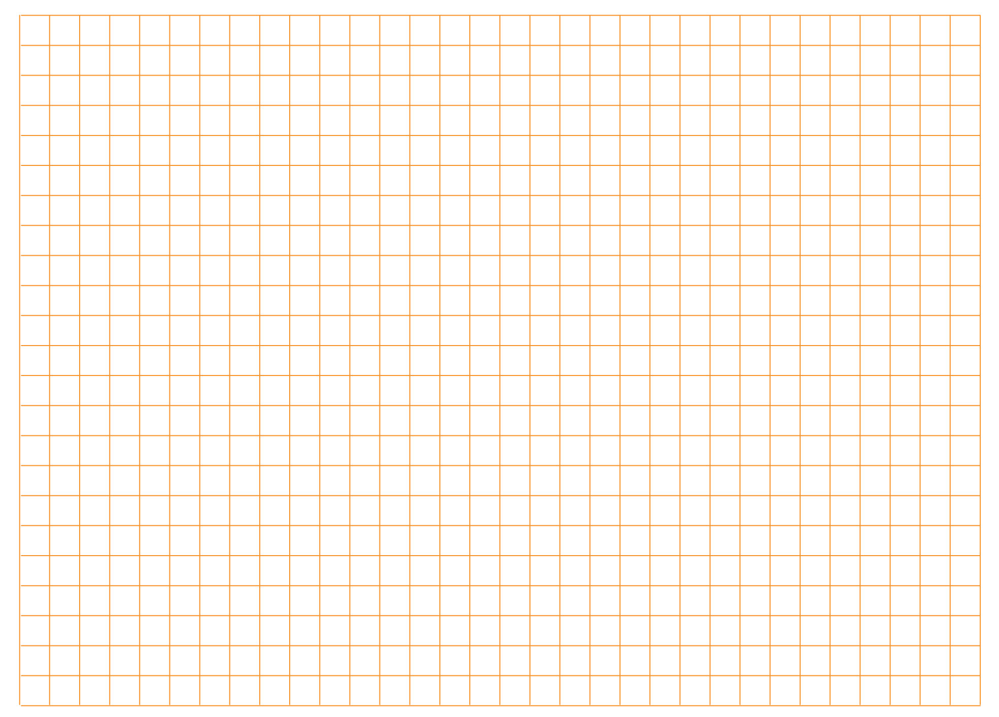
Figuur 15
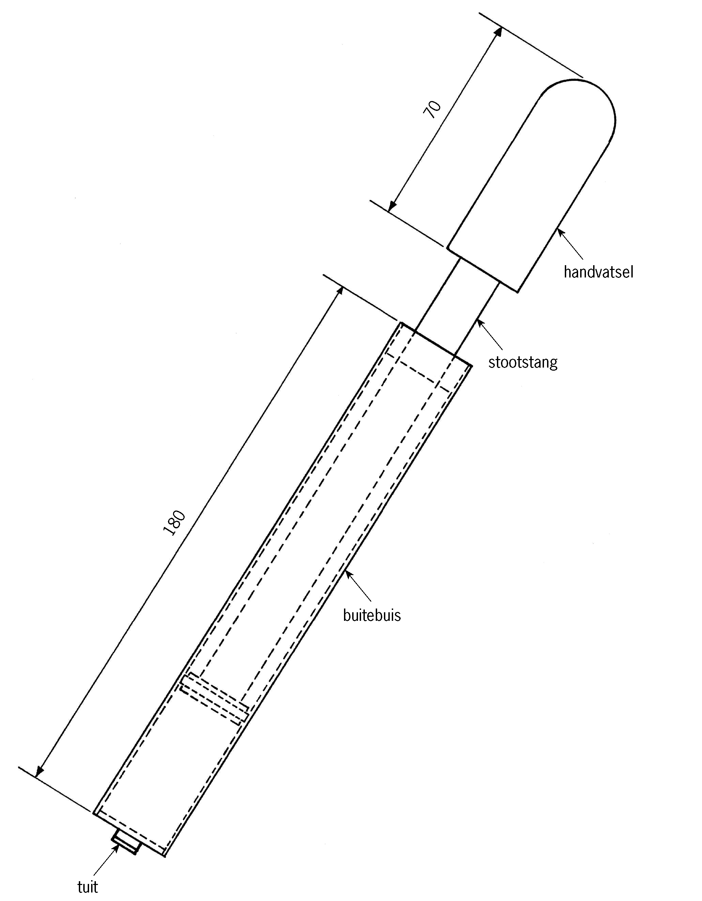
'n Fietspomp
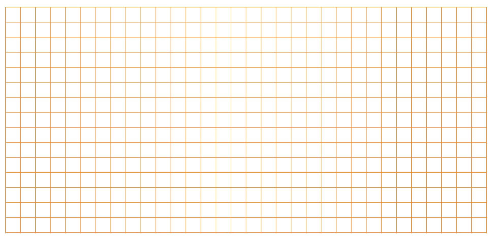
Figuur 16
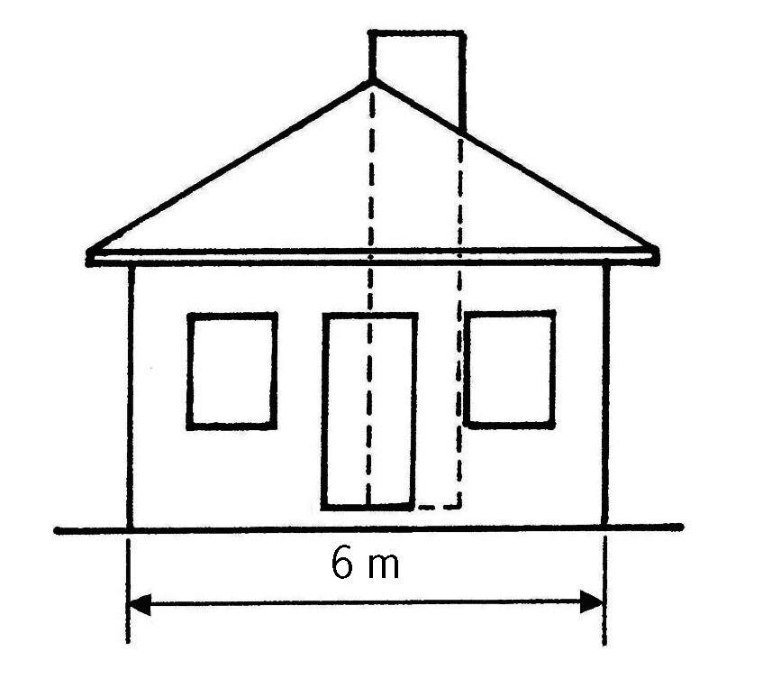
Vooraansig van die huis
Volgende week
Volgende week gaan jy leer om tekeninge te maak wat meer as een sy van ’n voorwerp wys.